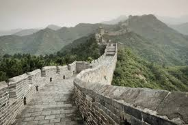
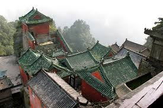
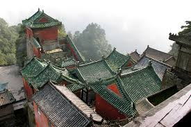
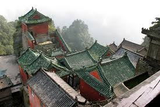

 


Great wall of China
This Country is one of my dream places to go. I love how they construct the Great wall of China and knowing it's history will be interesting.
Flight
To visit the Great Wall of China from Quezon City, you'll need to fly to Beijing, then travel to one of the wall's accessible sections, such as Badaling or Mutianyu, via train, bus, taxi, or a private car service.
Other places to visit.
- Forbidden City (Beijing): The largest ancient wooden complex and former imperial palace of the Ming and Qing dynasties.
- Terracotta Army (Xi'an): A vast collection of terracotta soldiers guarding the tomb of China's first emperor, Qin Shi Huang.
- Potala Palace (Lhasa, Tibet): A stunning symbol of Tibetan Buddhism and the resting place of previous Dalai Lamas.
- Summer Palace (Beijing): An imperial garden with breathtaking landscapes, pavilions, and lakes.
- Classical Gardens of Suzhou: UNESCO-listed gardens known for their intricate designs and peaceful atmosphere.
- Yangtze River and the Three Gorges: A majestic river featuring towering cliffs and breathtaking scenery.